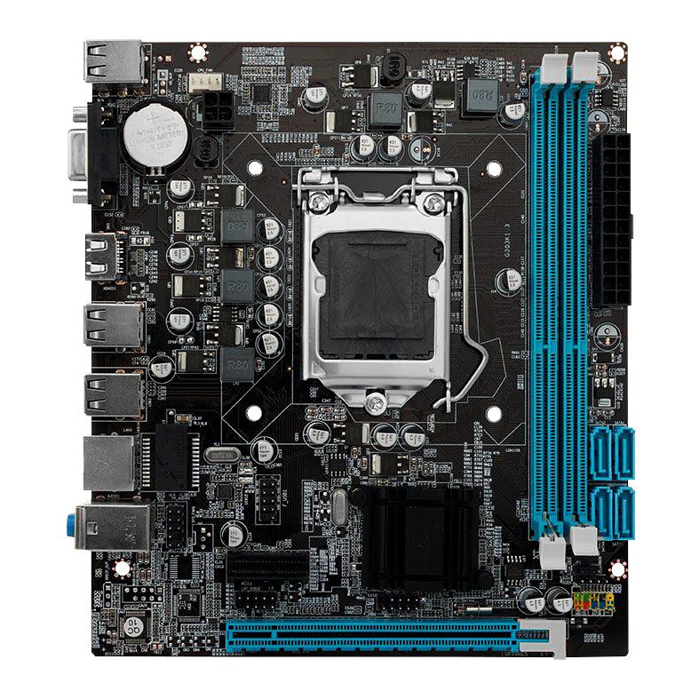

Sistemas Operacionais
Os sistemas operacionais são a base para o funcionamento de qualquer computador ou dispositivo móvel. Eles gerenciam o hardware e oferecem uma interface para o usuário interagir com o dispositivo. Os principais sistemas operacionais incluem Windows, macOS, Linux, Android e iOS, cada um com suas características únicas e áreas de aplicação.

Componentes de Hardware
Os componentes de hardware são os elementos físicos de um computador. Isso inclui a placa-mãe, a placa de vídeo, a memória RAM, o armazenamento e muito mais. Cada componente desempenha um papel crucial na performance geral do sistema. Conhecer esses componentes e suas funções é essencial para qualquer entusiasta de tecnologia.